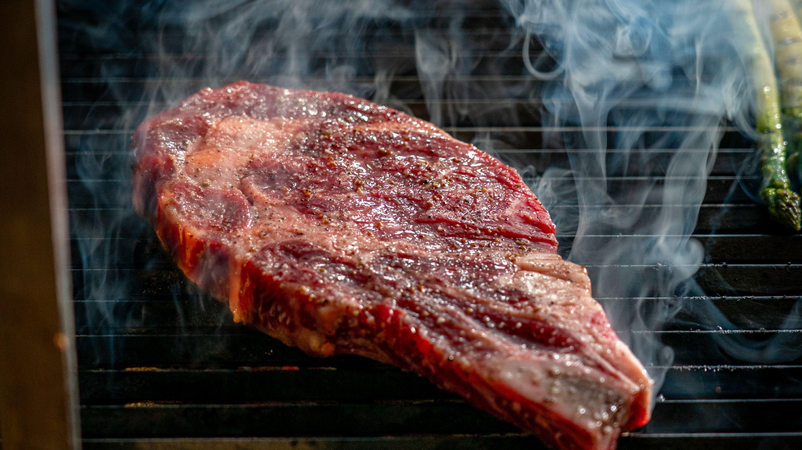

"Depois que comprei a picanha do Jubilous Steaks, meu cunhado finalmente parou de reclamar do ponto da carne no domingo. Ele estava tão ocupado mastigando que nem conseguiu falar. Nota 10/10!"
"Eu passei três anos comendo apenas folhas e grãos. Um dia, senti o cheiro do cupim do Jubilous Steaks saindo da casa do vizinho. Entrei no site, fiz meu pedido e hoje minha saúde mental agradece."
"A carne é tão macia que economizei no dentista do meu avô. Ele conseguiu comer o cupim 'Travesseiro de Noiva' inteirinho mesmo sem a dentadura! Vale cada centavo do Pix."
"Meus pacientes vivem me pedindo dieta para emagrecer comendo alface. Eu mando logo o link do Jubilous Steaks e prescrevo 300g de fraldinha com gordura na brasa três vezes por semana. O sorriso volta no rosto na hora!"
